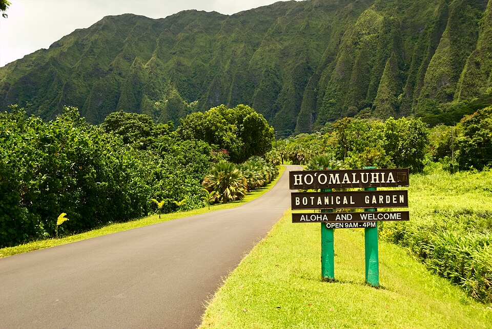

Hoʻomaluhia Botanical Garden
Place: Hoʻomaluhia Botanical Garden, Kāneʻohe, Oʻahu
Type: Botanical garden / flood-control landscape / public park
Story it tells: A Windward Oʻahu garden whose name means “peaceful refuge,” built from a flood-control project beneath the Koʻolau Mountains.

Hoʻomaluhia Botanical Garden is a 400-acre garden in Kāneʻohe on Windward Oʻahu. Its name comes from the Hawaiian word hoʻomaluhia, often rendered as “peaceful refuge” or “to make peaceful.” The meaning fits the experience many visitors associate with the garden: broad lawns, quiet roads, a lake, tropical plant collections, and dramatic views of the Koʻolau Mountains.
The garden opened in 1982 and contains plant collections from major tropical regions around the world, including Hawaiʻi, Polynesia, Africa, India and Sri Lanka, Malaysia, Melanesia, the Philippines, and the tropical Americas. Special emphasis is placed on plants native to Hawaiʻi and Polynesia. The collections make Hoʻomaluhia both a public garden and a place where global tropical landscapes are gathered within a Windward Oʻahu setting.
Although Hoʻomaluhia is remembered today for its beauty and calm, it was created for a practical purpose. The garden was designed and built by the U.S. Army Corps of Engineers as part of the Kāneʻohe-Kailua Dam flood-control project after major floods damaged downstream Kāneʻohe communities in 1965 and 1969. Construction created a 32-acre reservoir, later known as Loko Waimaluhia, or “lake of tranquil waters,” to help retain floodwaters from the upper Kāneʻohe watershed.
The landscape carries two related meanings. On one level, Hoʻomaluhia is a recreational garden where visitors walk, camp, fish, photograph the Koʻolau cliffs, and experience the quiet atmosphere suggested by its name. On another level, it is an engineered flood-control basin designed to protect neighborhoods below. The same rainfall that keeps the garden lush also explains why the reservoir and dam were built.
Today, Hoʻomaluhia Botanical Garden is one of Oʻahu’s most recognizable landscapes and a favorite destination for visitors, especially photographers. Its name continues to describe both the feeling of the place and the purpose it came to serve: creating peace, refuge, and protection beneath the steep green walls of the Koʻolau Mountains.